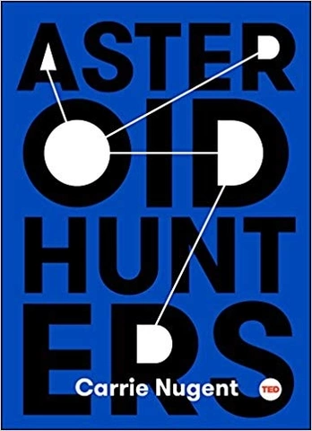

|  |
|
Price: $17,00
|
| Overview |
|---|
|
Auhor: Carrie Nugent For the first time, scientists could have the knowledge to prevent a natural disaster epic in scale--an asteroid hitting the earth and in this exciting, adventuresome book, Carrie Nugent explains how. What are asteroids, and where do they come from? And, most urgently: Are they going to hit the Earth? What would happen if one was on its way? Carrie Nugent is an asteroid hunter--part of a group of scientists working to map our cosmic neighborhood. For the first time ever, we are reaching the point where we may be able to prevent the horrible natural disaster that would result from an asteroid collision. In Asteroid Hunters, Nugent reveals what known impact asteroids have had: the extinction of the dinosaurs, the earth-sized hole Shoemaker Levy 9 left in Jupiter just a few decades ago, how the meteorite that bursted over Chelyabinsk in Russia could have started a war, and unlucky Ms. Anne Hodges--the only person (that we know of) in US history to be the victim of a direct hit. Nugent also introduces the telescope she uses to detect near-Earth asteroids. Ultimately, detection is the key to preventing asteroid impact, and these specialized scientists are working to prevent the unthinkable from happening. If successful, asteroid hunting will lead to the first natural disaster humans have the know-how and the technology to prevent. The successful hunt and mapping of asteroids could mean nothing less than saving life on earth. |